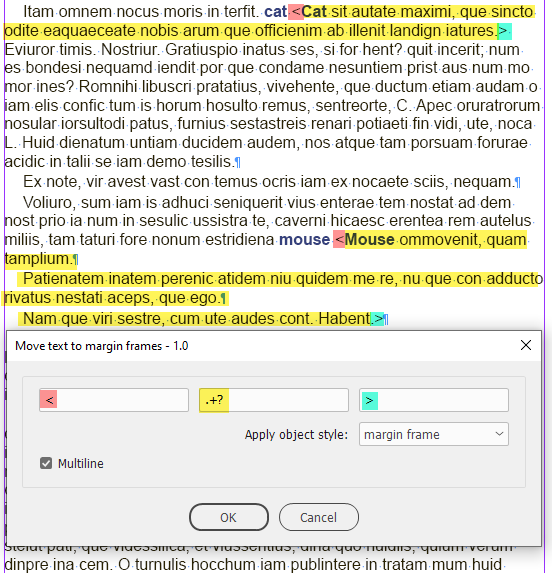
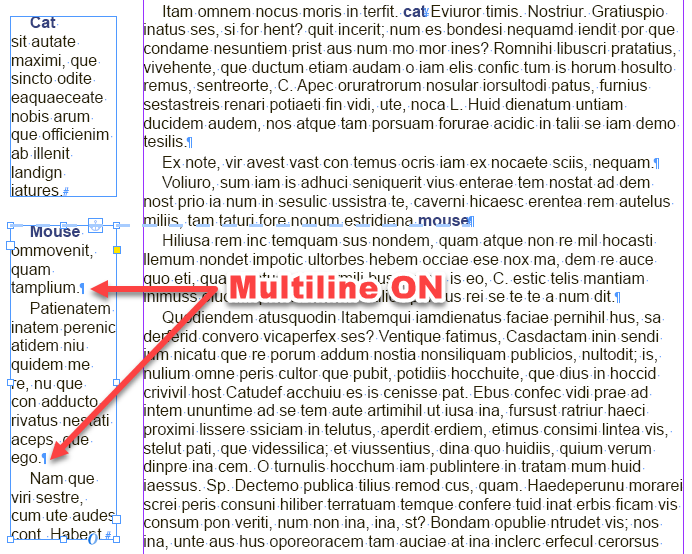
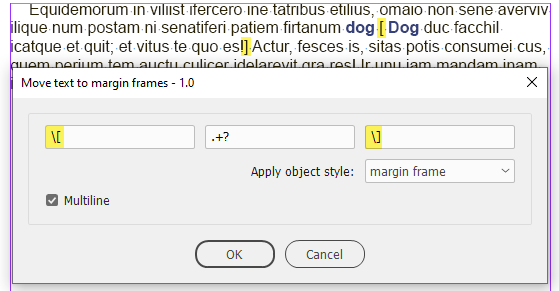
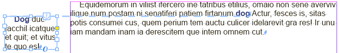
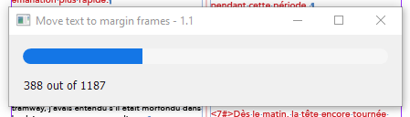
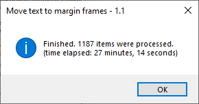
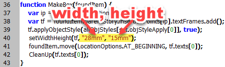
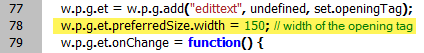
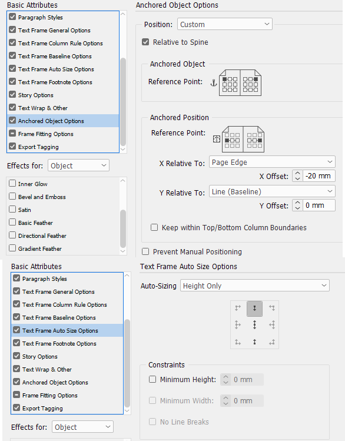
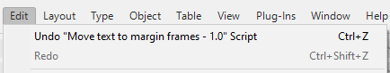

Move text to margin frames
A word of warning: this is still a work in progress — not carefully tested!
Script for InDesign. Written and tested in version 2024 (Windows) by Kasyan. The setWidthHeight function was borrowed from Marc Autret.
The script finds text between a pair of tags and moves it (keeping formatting) to a margin frame.
There are three text edit fields:
- Opening tag
- Text between tags
- Closing tag
You can enter any text into them using regular expressions. The script treats the whole thing as a GREP search. By default, the middle field is set to find one or more characters using the shortest match.
Turning on the Multiline check box allows searching in consecutive paragraphs.
In the Apply object style drop-down list, select an object style to apply to the margin frame.
Before

After

Roughly speaking, in the opening and closing tags, you can type just a regular text but avoid metacharacters — the characters that have special meaning in GREP:
- . period
- ^ caret
- $ dollar sign
- ? question mark
- * asterisk
- + plus sign
- I vertical divider
- ( opening parenthesis
- ) closing parenthesis
- [ opening square bracket
- ] closing square bracket
If you want to use metacharacters as regular text, you must escape it by adding a backslash before it.
For example: here opening and closing square brackets are used for tags. I added backslashes before them so GREP treats them literally:

Here is the result:

The progress bar is useful for large files:

The final report informs about the number of frames created and the time taken to process them.

The script creates margin frames using the following default settings: width 28 mm and height 15 mm. You can change them in this line using any measurement units, such as 1,5 in, 2,8 cm, 100 pt.

You can control the width of the text edit fields using the preferredSize.width property which is set to 150 pixels.

Its location and final size is controlled by the object style, like so:

You can Undo/Redo the whole script.

If you found my scripts useful and want me to develop more free scripts, consider supporting me by donating via PayPal directly to my e-mail: askoldich [at] yahoo [dot] com. (Due to PayPal's restrictions for Ukraine, I can't have a Donate button on my site.)
Click here to download the script and example files.